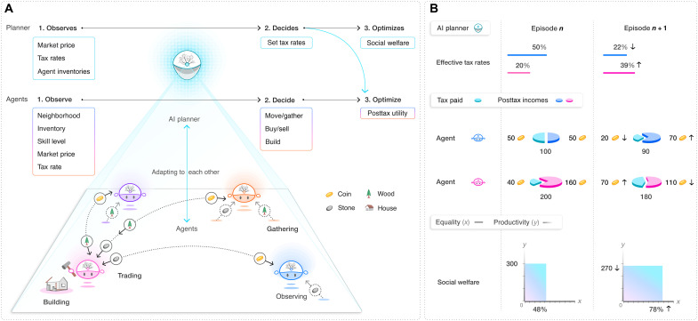
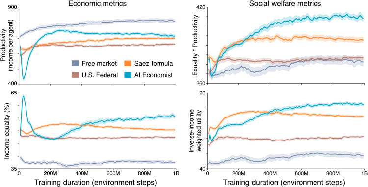
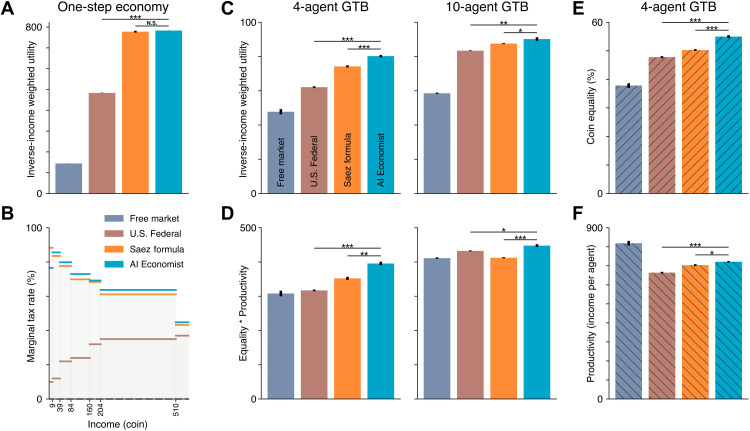
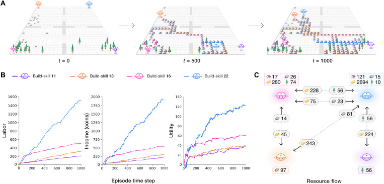
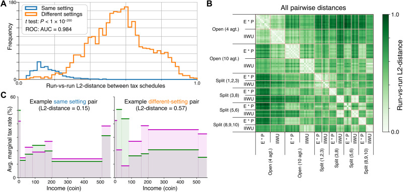
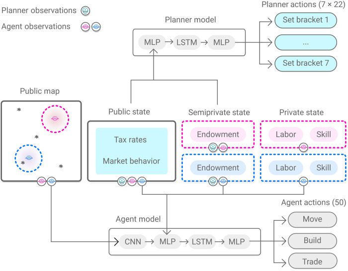

The AI Economist: Taxation policy design via two-level deep multiagent reinforcement learning
Science Advances · 2022 · 优先阅读
把规划者与个体分层，适合人地耦合、政策设计和多主体互动。
许可：CC BY 4.0。分区详见 筛选依据，未宣称已核验中科院一区。
Fig. 1 规划者与个体的双层学习
用途： 多智能体。
画法借鉴： 把慢尺度的制度动作与快尺度的个体动作分开；各层奖励分别标注。
解释边界： 规划者和个体并不共享同一个优化目标。

Stephan Zheng; Alexander Trott; Sunil Srinivasa; David C Parkes; Richard Socher. The AI Economist: Taxation policy design via two-level deep multiagent reinforcement learning. Science Advances (2022), Fig. 1. https://doi.org/10.1126/sciadv.abk2607. CC BY 4.0. 未裁切、未重绘；按比例显示。
Fig. 2 多主体训练的不稳定性
用途： 学习曲线。
画法借鉴： 展示规划者与个体的训练变化，并用重复训练的不确定性提示非平稳性。
解释边界： 跨随机种子的误差与 episode 内波动需要区别。

Stephan Zheng; Alexander Trott; Sunil Srinivasa; David C Parkes; Richard Socher. The AI Economist: Taxation policy design via two-level deep multiagent reinforcement learning. Science Advances (2022), Fig. 2. https://doi.org/10.1126/sciadv.abk2607. CC BY 4.0. 未裁切、未重绘；按比例显示。
Fig. 3 社会福利分解成可解释指标
用途： 多目标权衡。
画法借鉴： 把综合目标拆成公平和产出，并保留传统政策基线。
解释边界： 综合目标提高不能说明每个群体都受益。

Stephan Zheng; Alexander Trott; Sunil Srinivasa; David C Parkes; Richard Socher. The AI Economist: Taxation policy design via two-level deep multiagent reinforcement learning. Science Advances (2022), Fig. 3. https://doi.org/10.1126/sciadv.abk2607. CC BY 4.0. 未裁切、未重绘；按比例显示。
Fig. 4 时空行为与主体资源流
用途： 策略行为。
画法借鉴： 用环境快照、个体时间曲线和主体间流量图解释涌现分工。
解释边界： 流量图中的关联不自动意味着某主体对另一主体的因果影响。

Stephan Zheng; Alexander Trott; Sunil Srinivasa; David C Parkes; Richard Socher. The AI Economist: Taxation policy design via two-level deep multiagent reinforcement learning. Science Advances (2022), Fig. 4. https://doi.org/10.1126/sciadv.abk2607. CC BY 4.0. 未裁切、未重绘；按比例显示。
Fig. 7 政策差异的分布与矩阵
用途： 稳健性与风险。
画法借鉴： 比较同设置重复训练与跨设置的策略距离，量化学到的政策是否稳定。
解释边界： 距离度量与归一化方式会改变政策相似性。

Stephan Zheng; Alexander Trott; Sunil Srinivasa; David C Parkes; Richard Socher. The AI Economist: Taxation policy design via two-level deep multiagent reinforcement learning. Science Advances (2022), Fig. 7. https://doi.org/10.1126/sciadv.abk2607. CC BY 4.0. 未裁切、未重绘；按比例显示。
Fig. 9 不同主体各自看到什么
用途： 多智能体。
画法借鉴： 为个体和规划者分别列观测与动作接口，再连接各自策略网络。
解释边界： 仿真全局状态不能自动当作各主体在线观测。

Stephan Zheng; Alexander Trott; Sunil Srinivasa; David C Parkes; Richard Socher. The AI Economist: Taxation policy design via two-level deep multiagent reinforcement learning. Science Advances (2022), Fig. 9. https://doi.org/10.1126/sciadv.abk2607. CC BY 4.0. 未裁切、未重绘；按比例显示。